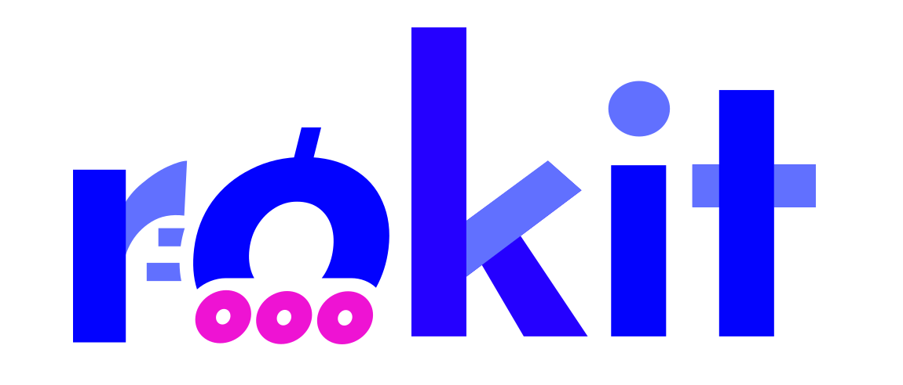

- Ausgabedatum: 2018-01-01
- Harmonisiert: Nein
- Gülitgkeit: Ja
- Deutsch verfügbar: Ja
- Englisch verfügbar: Ja
- Frei verfügbar: Nein
DIN EN ISO 10075-1:2018-01
Ergonomische Grundlagen bezüglich psychischer Arbeitsbelastung–Teil 1: Allgemeine Aspekte und Konzepte und Begriffe
Gremium: SC1 Dokumententyp: B-Norm 
Anwendungsbereich
Dieses Dokument definiert Begriffe im Bereich der psychischen Arbeitsbelastung und behandelt dabei die psychische Belastung und Beanspruchung, die kurz- und langfristigen, positiven und negativen Folgen der psychischen Beanspruchung. Dieses Dokument spezifiziert die Zusammenhänge zwischen den beschriebenen Konzepten. Psychische Arbeitsbelastung wird in diesem Dokument als übergreifender oder generischer Begriff verwendet, der sich auf sämtliche in diesem Dokument aufgeführten Konzepte und Konstrukte bezieht und im Rahmen dieses Dokumentes keine festgelegte oder genormte Eigenbedeutung hat. Dies steht in Übereinstimmung mit der Verwendung des Begriffs im Bereich der Ergonomie und ihrer Anwendungen, innerhalb derer der Begriff sich auf psychische Belastung, psychische Beanspruchung und deren Auswirkungen beziehen kann, d. h. sowohl auf die Ursachen als auch auf die Auswirkungen. In diesem Dokument wird der Begriff psychische Arbeitsbelastung daher nicht als Fachterminus verwendet, sondern nur als Verweis auf den Bereich der psychischen Arbeitsbelastung. ANMERKUNG Anhang A beinhaltet weitere Erläuterungen zu Begriffen und Konzepten. Dieses Dokument gilt für die Gestaltung von Arbeitsbedingungen in Bezug auf die psychische Arbeitsbelastung und ist dafür vorgesehen, einen einheitlichen Sprachgebrauch zwischen Fachleuten und Praktikern auf dem Gebiet der Ergonomie sowie im Allgemeinen zu fördern. Dieses Dokument behandelt weder Messverfahren noch Grundsätze der Aufgabengestaltung. Diese Themen werden in ISO 10075-2 und ISO 10075-3 behandelt.
Tags
Domäne:
Gefährdungen:
Einsatzgebiete:
Normative Verweisungen
DIN EN ISO 6385 DIN EN ISO 10075-2 DIN EN ISO 10075-3 DIN EN ISO 12100